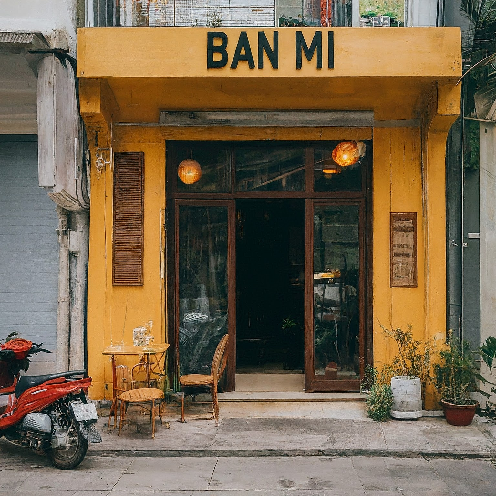
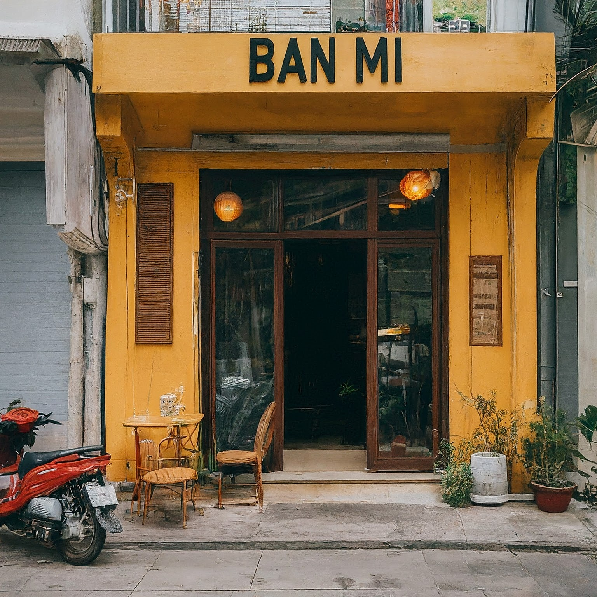

Đạt grew up in a modest household, surrounded by the aromatic scents of his grandmother's kitchen, where he learned the secrets of traditional Vietnamese cuisine. From a young age, Đạt harbored dreams of one day sharing these flavors with the world.
As Đạt grew older, he witnessed the economic challenges facing his family and community. Determined to seek a better life, Đạt made the bold decision to immigrate to the United States. With nothing but his culinary skills and a heart full of hope, Đạt embarked on a journey to the land of opportunity.
Arriving in America was not easy for Đạt. He faced language barriers, cultural differences, and the harsh realities of starting anew in a foreign land. However, Đạt's resilience and passion for cooking never wavered. He found work in various restaurants, soaking up knowledge like a sponge and honing his craft with every dish he prepared.
After years of hard work and saving every penny he could, Đạt finally realized his dream of opening his own restaurant. With the support of his community and the unwavering belief in his culinary heritage, Đạt opened " Đạt Bánh mì" – a cozy Vietnamese eatery nestled in the heart of a vibrant neighborhood.
At Đạt Bánh mì, Đạt poured his heart and soul into every dish, infusing each recipe with the flavors of his homeland and the warmth of his grandmother's kitchen. Word quickly spread about the mouthwatering pho, the fragrant spring rolls, and the delectable banh mi sandwiches served at Đạt Bánh mì.
Soon, people from all walks of life flocked toĐạt Bánh mì, drawn not only by the delicious food but also by Đạt’s infectious passion and unwavering hospitality. His restaurant became a melting pot of cultures, where strangers become friends over steaming bowls of noodles and laughter filled the air.
As Đạt Bánh mì flourished, Đạt American dream came true. He not only found success as a restaurateur but also became a beloved member of his community, a symbol of perseverance, and a testament to the power of chasing one's dreams.
Today, Đạt Phạm’ s journey serves as an inspiration to many – a reminder that with hard work, determination, and a sprinkle of love, anything is possible, even turning a humble bowl of noodles into a taste of the American dream.
 
